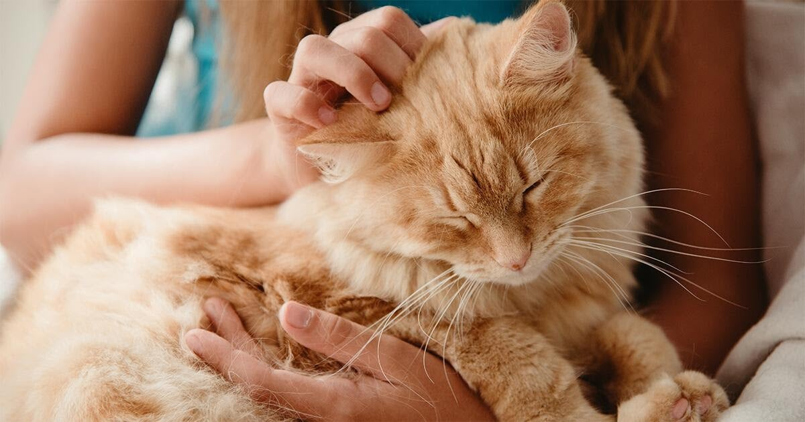

Duygusal Bağlar
Kediler, bağımsız doğalarına rağmen sahipleriyle derin duygusal bağlar kurarlar. Mırıldanmaları, insanlar üzerinde sakinleştirici bir etkiye sahiptir ve stresi azalttığı bilimsel olarak kanıtlanmıştır.
Modern Yaşamda Kediler
Şehir hayatının yoğun temposunda kediler, apartman yaşamına en kolay uyum sağlayan evcil hayvanlardır. Sessiz yapıları ve temizlik alışkanlıkları, onları modern insanın ideal dostu yapmaktadır.
Kültürel Önem
Edebiyattan sinemaya, internet kültüründen sanata kadar kediler her zaman insanların ilham kaynağı olmuştur. Sosyal medyada en çok paylaşılan içeriklerin başında gelmeleri, bu ilişkinin ne kadar güçlü olduğunun bir kanıtıdır.